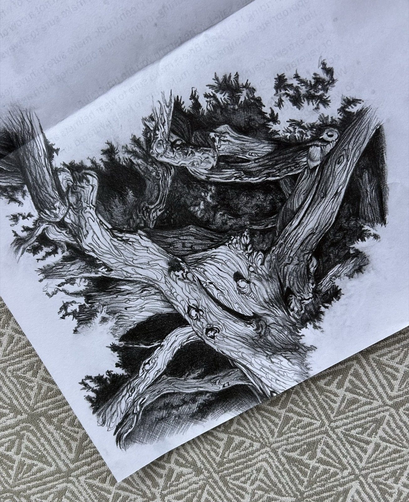
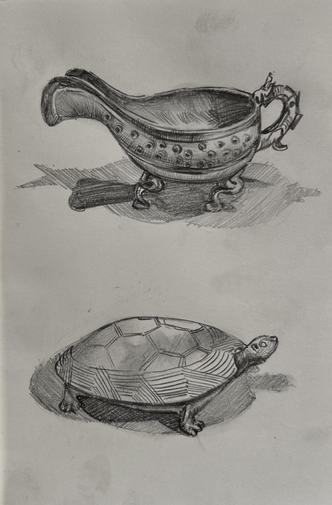
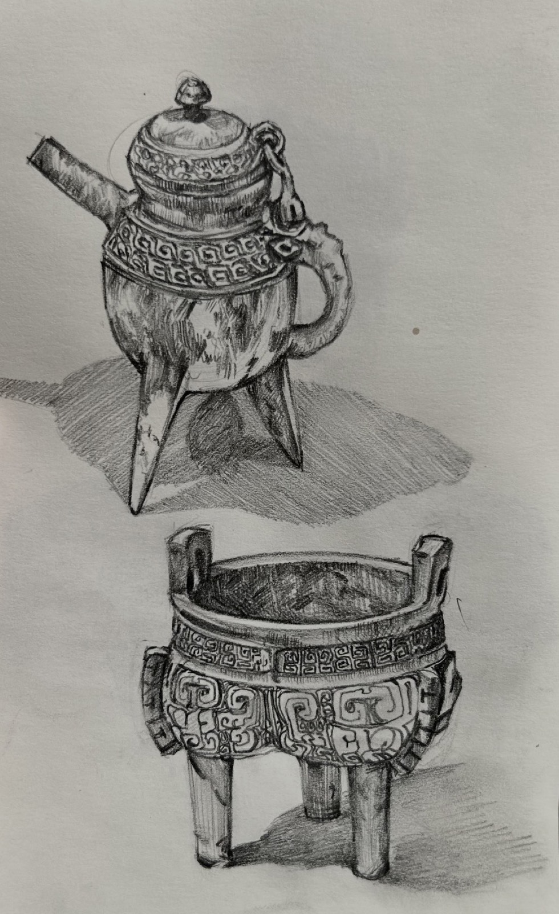
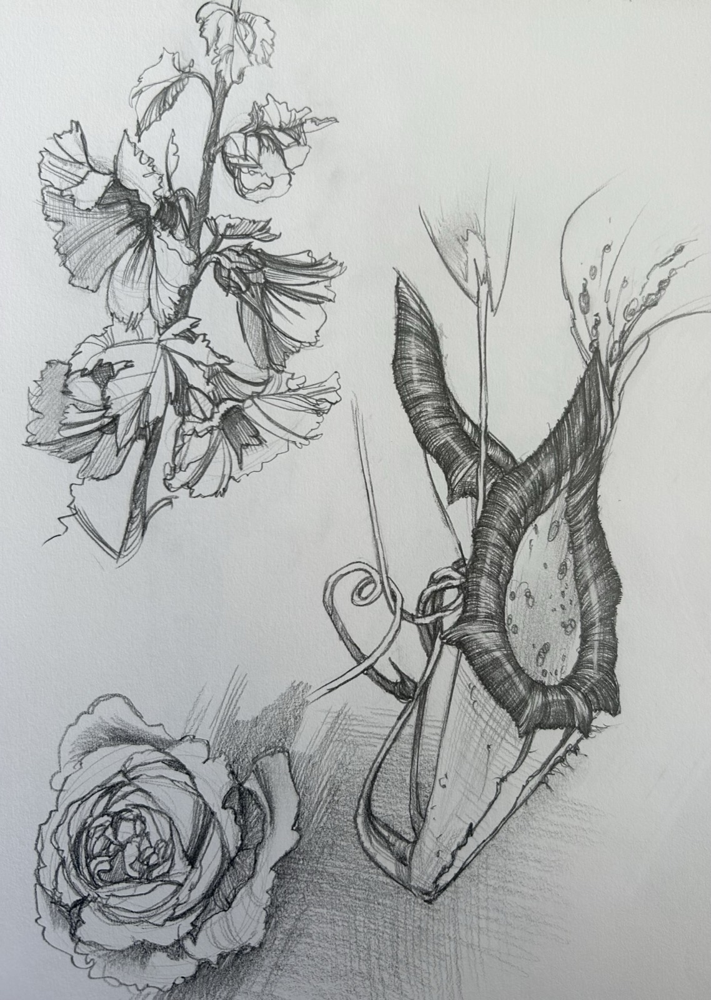

Sketchbook
Pencil and pen, drawn from observation. The thing I keep doing when nothing is asking me to.
Before any of the design work, there was me sitting with an object long enough to actually see it. These are graphite and ballpoint studies kept over the years: still life, plants, places, and the mechanical things I felt an urge to take apart with a pencil.





The other half of the page is mechanical. I like drawing machines for the same reason I like reading their drawings: nothing is decorative, every line is doing a job.